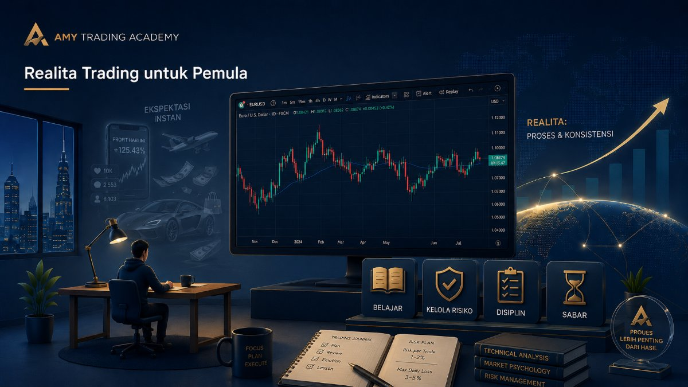
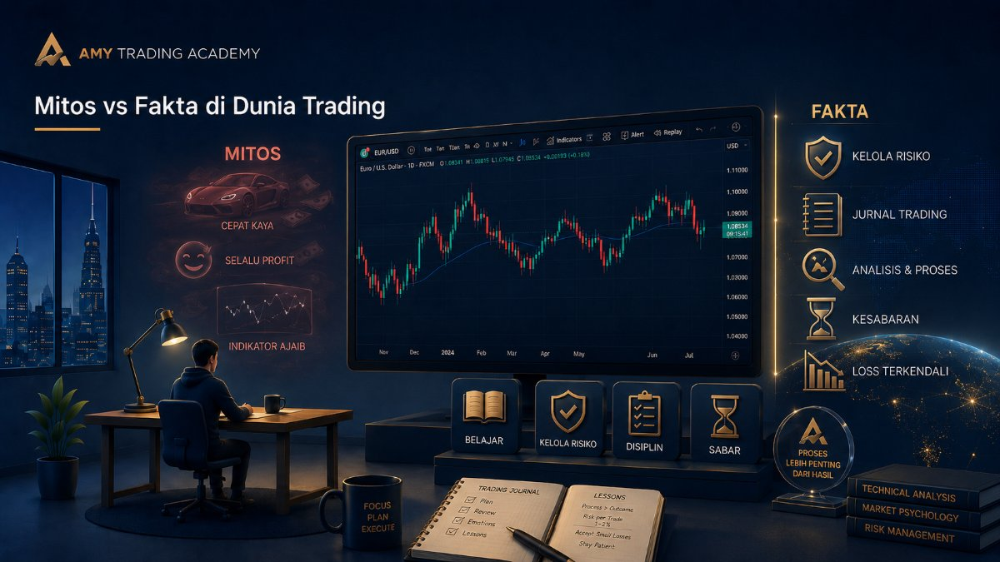
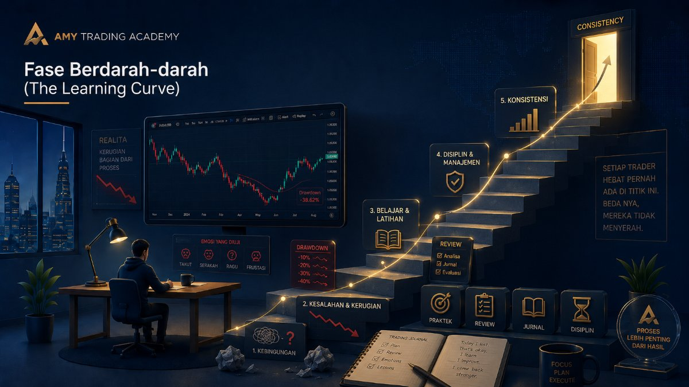
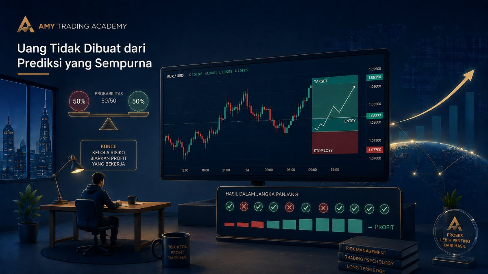
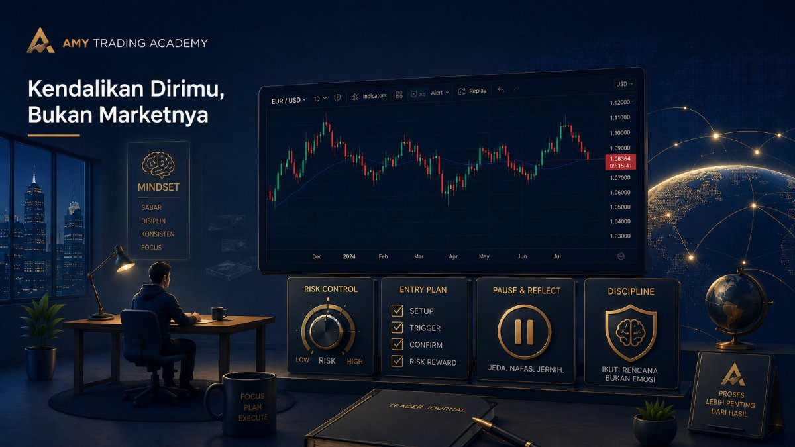
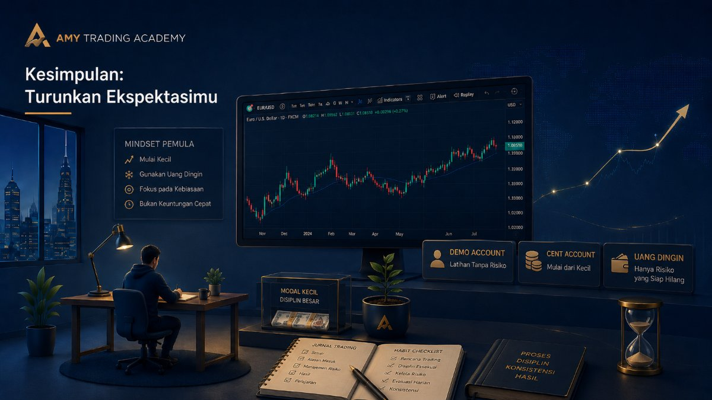

Realita Trading untuk Pemula

Mari kita bicara jujur. Media sosial sering kali memberikan gambaran yang terlalu indah tentang trading. Kamu mungkin sering melihat orang pamer mobil mewah, liburan ke luar negeri, atau profit biru-biru ribuan dolar hanya bermodal rebahan sambil menatap layar HP. Kelihatannya sangat mudah dan instan, bukan?
Tapi, selamat datang di dunia nyata. Kalau kamu masuk ke market dengan harapan bisa langsung kaya dalam sebulan, kamu sedang berjalan menuju jurang. Realita trading itu jauh dari kata instan, dan bab ini akan membongkar apa yang sebenarnya terjadi di balik layar.
Mitos vs Fakta di Dunia Trading

Banyak pemula yang hancur mental dan modalnya di bulan pertama karena kemakan mitos. Mari kita luruskan satu per satu.
Mitos 1: Trading itu cara cepat kaya.
Fakta: Trading adalah cara *paling sulit* untuk mendapatkan uang yang terlihat *mudah*. Untuk bisa menghasilkan profit konsisten, seorang trader harus melewati fase belajar, fase rugi, fase stres, dan fase membenahi psikologi yang bisa memakan waktu berbulan-bulan bahkan bertahun-tahun.
Mitos 2: Kamu harus selalu profit.
Fakta: Trader profesional pun mengalami kerugian (Loss). Bedanya, kerugian mereka terukur dan sudah direncanakan. Trading itu ibarat bisnis dagang biasa. Kalau kamu jualan buah, pasti ada buah yang busuk dan harus dibuang. Rugi (Loss) dalam trading adalah biaya operasional bisnismu (cost of doing business).
Mitos 3: Indikator atau sinyal berbayar akan membuatmu kaya.
Fakta: Tidak ada satu pun indikator yang 100% akurat. Kalau ada indikator ajaib seperti itu, penciptanya sudah jadi orang terkaya di dunia dan tidak akan menjualnya kepadamu seharga 500 ribu rupiah. Mengandalkan sinyal orang lain tanpa paham alasan di baliknya hanya akan membuatmu menjadi "robot" yang tidak bisa mandiri.
Fase Berdarah-darah (The Learning Curve)

Setiap profesi butuh waktu belajar. Kalau kamu mau jadi dokter, kamu butuh kuliah bertahun-tahun. Mau jadi mekanik andal, butuh praktik bongkar mesin berkali-kali. Kenapa banyak orang berpikir mereka bisa jadi trader sukses hanya dengan nonton YouTube 2 jam?
Di awal perjalananmu (fase ini), kamu PASTI akan membuat kesalahan. Kamu akan salah pencet, kamu akan panik saat harga berbalik arah, kamu akan menahan posisi rugi (floating minus) sampai modalmu habis terbakar (Margin Call/MC), dan kamu akan balas dendam ke market karena tidak terima uangmu hilang (Revenge Trading).
Itu semua wajar. Itu adalah biaya sekolahmu. Masalahnya, apakah "biaya sekolah" itu menghabiskan seluruh uang tabunganmu, atau hanya sebagian kecil yang sudah kamu relakan untuk belajar? Di sinilah manajemen risiko menyelamatkan nyawamu.
Uang Tidak Dibuat dari Prediksi yang Sempurna

Banyak yang mengira pekerjaan trader adalah meramal masa depan dengan tepat. Padahal, trading sama sekali bukan tentang prediksi masa depan. Trading adalah tentang probabilitas dan manajemen risiko.
Misalnya, kamu punya setup strategi yang hanya berhasil 5 kali dari 10 kali percobaan (Win Rate 50%). Artinya, tebakanmu setengahnya salah. Tapi, setiap kali kamu salah, kamu cuma rugi $10. Dan setiap kali kamu benar, kamu profit $30.
Hitungannya:
Rugi 5 kali x $10 = Rugi $50.
Profit 5 kali x $30 = Profit $150.
Total bersih: Profit $100.
Lihat? Kamu salah setengah dari total percobaanmu, tapi di akhir bulan kamu tetap membawa pulang keuntungan. Inilah yang membedakan trader profesional dengan penjudi. Trader profesional tidak stres saat tebakannya salah, karena dia tahu kerugiannya kecil dan terkontrol.
Kendalikan Dirimu, Bukan Marketnya

Kamu tidak akan pernah bisa mengendalikan market. Market mau naik tajam gara-gara berita tiba-tiba, itu hak market. Market mau jalan lambat banget berhari-hari, itu juga terserah market. Banyak uang besar (institusi, bank sentral) yang menggerakkan pasar ini.
Satu-satunya hal yang BISA dan HARUS kamu kendalikan adalah dirimu sendiri.
- Kamu bisa mengendalikan berapa banyak uang yang siap kamu risikokan.
- Kamu bisa mengendalikan kapan kamu akan klik tombol Buy atau Sell.
- Kamu bisa mengendalikan diri untuk tutup laptop dan istirahat saat market sedang tidak bersahabat.
Psikologi trading jauh lebih penting daripada strategi teknikal. Banyak trader yang jago baca chart, tahu area Supply and Demand, tahu Liquidity, tapi tetap hancur lebur karena serakah atau takut (Greed & Fear).
Kesimpulan: Turunkan Ekspektasimu

Kalau tujuanmu masuk ke dunia trading adalah untuk mencari uang bayar kos bulan depan, atau membayar hutang pinjaman online yang jatuh tempo besok... berhentilah sekarang. Tekanan mentalnya akan menghancurkan keputusan tradingmu.
Tradinglah dengan uang dingin (uang yang kalau hilang pun tidak akan mengganggu makan atau tidurmu). Mulailah dengan akun demo, atau akun riil dengan modal yang sangat kecil (akun mikro/cent). Fokuslah pada membangun kebiasaan yang benar, bukan mengejar nominal profit.
Proses ini butuh waktu. Tapi kalau kamu konsisten, disiplin mematuhi aturanmu sendiri, dan tidak menyerah di tengah jalan, trading bisa menjadi skill seumur hidup yang memberikan kebebasan finansial yang sebenarnya.